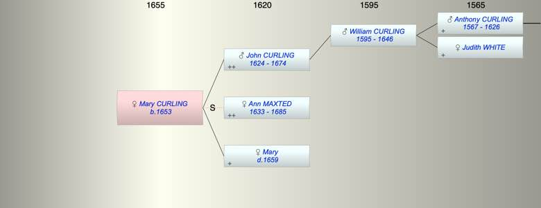

| [Index] |
| Mary CURLING (1653 - ) |
|  |
| b. 1653 at St Peters |
| Parents: |
| John CURLING (1624 - 1674) |
| Mary ( - 1659) |
| Events in Mary CURLING (1653 - )'s life | |||||
| Date | Age | Event | Place | Notes | Src |
| 1653 | Mary CURLING was born | St Peters | Note 1 | ||
| 13 Mar 1659 | 6 | Death of mother Mary | St Peters, Thanet | Note 2 | |
| 1674 | 21 | Death of father John CURLING (aged 50) | Note 3 | ||
| 1685 | 32 | Death of step mother Ann MAXTED (aged 52) | St Laurence | Note 4 | |
| Created on a Mac™ using iFamily for Mac™ on 8 Oct 2023 |